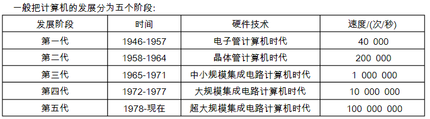
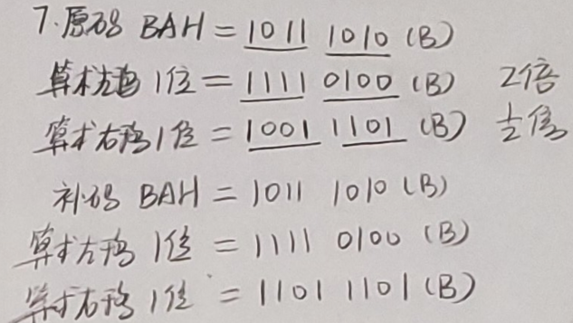

一：计算机系统概述
发展历程
电子管——晶体管——集成电器——大规模集成电器——摩尔定律

层次结构
1：硬件组成：
冯诺依曼体系结构：
计算机由运算器，控制器，存储器，输入，输出五部分组成；
指令和数据都用二进制代码表示，保存在存储器中，按地址寻址；
指令由操作码和地址码组成，在存储器内按顺序存放；
以运算器为中心，IO 通过运算器与存储器相连。
现代体系：
以存储器为中心
IO 尽可能绕过 CPU，直接让 IO 和存储器间完成
功能部件：
输入设备，
输出设备，
存储器：存储字，MAR 和 MDR 的位数。
运算器：算数运算和逻辑运算，ALU
控制器：PC + IR + CU，CPU 和主存储器构成主机，IO 设备和外村构成外设。
2：软件分类
系统软件：OS。DBMS，语言处理程序，分布式系统，网络系统，标准库，服务程序
应用软件：科学计算程序，应用类程序
机器语言，汇编语言，高级语言
3：工作过程
程序和数据装入主存，从程序起始地址开始执行；从起始地址取出第一条指令，译码执行并计算下一条指令地址；取出下条指令地址，在取值译码，执行间往复，直到执行完毕
4：多级层次结构
应用程序-高级语言-汇编语言-操作系统-指令集架构层-微代码层-硬件逻辑层
5：分类
单指令单数据流：冯诺依曼体系结构
单指令多数据流：向量处理器
多指令单数据流：不存在
多指令多数据流：多处理器
基本概念性能指标
机器字长：CPU一次能处理数据的位数，与CPU中寄存器位数有关
存储字长：存储器中一个存储单元（存储地址）所存储的二进制代码位数，与MDR位数有关，数据总线
指令字长：计算机指令字的位数
数据字长，计算机数据存储所占用的位数
总线宽度：总线上同时能够传输的数据位数，即数据总线的根数
总线带宽：单位时间内总线上传输数据的位数，通常每秒传输的字节数来衡量 总线带宽 = 总线工作频率* （总线宽度/8）
主存带宽：数据传输率
总线传输周期：一次总线操作所需的时间（申请，寻址，传输，结束），由若干总线时钟周期构成
总线时钟周期：及其时钟周期
CPU时钟周期：主拍脉冲或T周期，为主频的倒数
吞吐量：系统在单位时间内处理请求的数量，取决于主存存取周期；
响应时间：发出请求到得到结果的时间差，包括 CPU 时间和等待时间；
时钟周期：主频的倒数，CPU 最小时间单位
主频：
CPI：执行一条指令需要的时钟周期数
CPU 执行时间：运行一个程序花费的时间
MIPS：每秒执行多少百万条指令
FLOPS：每秒执行多少百万条浮点运算
二：数据编码
1：制数与编码
进制转换：
BCD码：8421码（加6修正）余3码，2421码
ASCII码：
校检原理
码距：
奇偶校检码：
海明校检码：
循环冗余码：
2：定点数
无符号数与有符号数
原码
补码
反码
移码
转换：
x为正数【x】
x为负数
无论正负【x】补——连同符号位取反加一——>【-x】
运算：
加法
移位运算：逻辑移位（无符号）算术移位（）
算术运算：

循环移位
例一：定点数加法运算
假设两个带符号整数x ， y .用8位补码表示，x=63 ，y = -31，则x - y 的表示及溢出标识OF是——
解：【x】原 = 0011 1111 ，[y]原 = 1001 1111 ，
【x】补 = 0011 1111 [y]补 = 1110 0001，[-y]补 = 0001 1111
【x-y】 = 【x】补 +【-y】补 = 5EH ，没有溢出 OF =0
例二：溢出判断：进位丢弃最高位不一定溢出，超出表示范围才算溢出，（当最高位进位与符号位进位的值不同是才溢出，可能是正负反转）

3：浮点数

IEEE754标准：
规格化后的短浮点数的真值为：（-1）^s X 1.M X 2^(E-127)
浮点数的加减运算：对阶，尾数相加，规格化，舍入，判溢出
溢出：阶码是否超出了表示范围
注意C语言中运算以补码表示运算
例一：浮点数加减运算以及溢出判断
浮点数的阶码和尾数均采用补码表示，且位数分别为5位和7位（均含2位符号位），数X=2^7 * 29/32
Y = 2^5 * 5/8 ，则用浮点加法计算X + Y 的最终结果为——
解：x = 00,111；00,11101 y= 00 ,101; 00,101
1:对阶：小阶向大阶看起：y = 00,111；00,00101
2:尾数相加 00,11101
+ 00,00101
——————
01,00010
3：规格化：尾数右移一位，阶码加一 01,000；00,10001
4：判溢出：阶码符号位为01 溢出
4：ALU
串行加法器
并行加法器
ALU 功能
ALU 是一个组合逻辑电路，核心是并行加法器，
4 片 74181 串联可组成 16 位 ALU，属于单级先行进位；
4 片 74181 和一片 74182 构成 16 位 ALU，属于两级先行进位 ALU
ALU 结构
两幅图，会画一级先行进位和二级先行进位
三：存储器层次结构
1：基本概念
1：层次划分：主存储器即内存，辅存储器即硬盘；高速缓存 Cache
存取方式：
- 随机存储器：如主存和 cache
- 只读存储器：也是随机存储，但只能读不能写，RAM 和 ROM 共同构成主存地址域。
- 串行访问存储器：如磁带是顺序访问存储器，硬盘是直接访问存储器，但不是随机存储器，需要先寻道然后再道上殊勋存取。
信息的可保护性：
断电易失：如 RAM
断电不丢失：如 ROM，磁盘，光盘
破坏性读：DRAM
非破坏性读：SRAM，磁盘
3：边界对齐：
大端小端存储方式：
- 大端：最高字节地址是数据地址（0123存成0123）
- 小端：最低字节地址是数据地址（0123存成3210）
2：性能指标
实际容量 = 存储单元个数 单元长度；理论容量= 存储子树 存储字长；
存取时间 = 取出结果时间 - 启动存储器时间
存取周期 = 存取时间 + 存储器状态恢复时间 = 连续读或写的最小时间间隔，显然存取周期>=存取时间
3：层次化结构
CPU-寄存器-Cache-主存-辅存

4：随机存储器
SRAM ：使用双稳态触发器存储信息，多用于高速缓存
非破坏性读，断电易失
引脚中处理地址线和数据线外，还有 CS（片选），WE（可写），OE（可读）
DRAM：
用电容电荷存储信息，用于主存；
刷新：
- 集中刷新：在固定的时间集中刷新，产生无法访问的时间段（死区）
- 分散刷新：将工作周期分开为读写周期和刷新周期，这样增加了存储周期，但无死区
- 异步刷新：刷新周期（2ms）除以行数，得到时间间隔 t，每时间 t 产生一次刷新，缩短死区时间；
刷新对 CPU 透明，刷新单位是行，刷新类似读，刷新无序片选；
DRAM 引脚除了地址线和数据线，还有 RAS（行选，起 CS 的作用），CAS（列选），WE，OE
只读存储器：
ROM 跟 RAM 一样随机读写，结构简单，断电不丢失
ROM，MROM 只读，PROM 写一次，EPROM 和 E2PROM 多次擦除，Flash 固态硬盘
Flash
（1）随机存储器

DRAM存储器的刷新
分散刷新：
集中刷新：
异步刷新：
（2）只读存储器ROM
MROM（掩膜式只读存储器）：
PROM（一次可编程只读存储器）
EPROM（可编程可擦除）
FlashMermory（闪存存储器）：U盘
固态硬盘
5：存储器与 CPU 的连接
（1）主存容量扩展：
字扩展：
位扩展：
字位同时扩展：
（2）双口RAM与多模块存储器
双端口RAM

两个端口对同一主存：可同时读，不可同时写，也不能边读边写
多提并行存储器
高位交叉编址：
地位交叉编址：
2：半导体存储器：

3：Cache
（1）地址映射方式：
全相连：主存字块标记|字块内地址
直接映射：
组相连：
（2）替换算法：
随机
先入先出
最近最少使用（LRU）
最不经常使用（LFU）
（3）写策略
命中：全写法 和写会法
不命中：写分配法和非写分配法
4：虚拟存储器
解决主存容量不足，希望向程序员提供更大的编程空间
页式虚拟存储器
转换：虚拟地址= 虚拟页号+页内偏移------->物理页号+页内偏移
段式虚拟存储器
段页式虚拟存储器
快表TLB：
页表，段表放在主存中，收到虚拟地址后先访问主存，查询页表段表进行虚实地址转换
四：指令系统
基本概念
数据通路：执行部件间传送信息的路径，分为共享通路和专用通路
指令集：一台机器所有指令的集合
RISC（精简指令集）和CISC（复杂指令集）
指令字长：指令中包含的二进制位数，有等长指令、变长指令。
2：基本格式分类
零地址指令：空操作，停机，关中断指令；运算类指令只用在堆栈计算机中
一地址指令：自加，自减，求反等单操作数运算；隐含地址 ACC，结果也放进 ACC 中，访问2次
二地址指令：| OP |A1 | A2| ，结果存放在 A1 中，访问3次
三地址指令：同时给出两个操作数地址和存放结果的地址，访问4次
四地址指令：在三地址指令基础上再给出下条指令地址，这不利于跳转。
定长指令：
指操作码长度固定，利于流水线
变长地址：
操作码长度不固定，会进行扩展操作码指令设计
寻址
指令寻址方式：顺序寻址，跳跃寻址
有效地址：指令中的地址码给出的是形式地址，要根据寻址方式得到有效地址
指令寻址：PC +1 ；JMP
数据寻址：根据指令中的地址码和寻址方式
2：数据寻址方式：
隐含寻址：操作数在 ACC 中
立即数寻址：指令直接给出操作数，地址码字段是操作数本身 MOV AX, 200H
寄存器寻址：地址码字段是寄存器地址 MOV AX, BX
直接寻址：指令给出操作数在内存地址，EA = A。地址码字段是内存地址 MOV AX, [200H]
间接寻址：指令给出操作数地址的地址，EA = (A)地址码字段是内存地址的地址 MOV AX, I[200H]
寄存器间接寻址：地址码字段是存内存地址的寄存器地址 MOV AX, [BX]
相对寻址：操作数地址 + 当前PC的值
基址寻址：操作数地址 + 基址寄存器的值（一段程序中不变） MOV AX, 32[B]
变址寻址：操作数地址 + 变址寄存器的值（随程序不断变化） MOV AX, 32[SI]
寄存器寻址：指令给出寄存器号。EA = R
寄存器间接寻址：指令给出寄存器号，寄存器存储操作数地址，EA = （R）
相对寻址：指令给出形式地址 A，EA = （PC ) + A（数加，A 是补码表示），注意 PC 取值后 +1
基址寻址：EA = （BR ） + A
变址寻址：EA = （IX ） + A
堆栈寻址：EA = (SP)
基址寻址用于为程序会数据分配存储空间，基址地址由操作系统给出且不变，A 由程序猿给出，可变。
变址寻址用于处理数组问题，变址寄存器内容由用户给出，可变；A 不变
3： 指令格式：R型指令，I型指令，J型指令
微指令
微指令的编码方式：目标尽量缩短指令字长
（1）直接编码方式：无须译码，以为代替一个微指令
（2）字段直接编码：互斥的放在同一字段，留出一个状态（000）
（3）字段间接编码
微指令格式
水平型 垂直型
微程序短，速度快 微程序长，速度慢
微指令长，编码麻烦 微指令端，好编码
流水线

数据寻址方式：
CISC：指令复杂庞大；指令长度不固定，指令执行时间和频率差异；大多采用微程序控制器；编译程序难优化
RISC：指令精简，指令定长；只选常用指令，且大都只用一个时钟周期；只有 Load/Store 才能访存；使用大量寄存器流水线和组合逻辑电路
五：中央处理器
1：CPU的功能与结构

2：指令执行过程
3：数据通路的功能的基本结构
主存与CPU之间的数据传送
CPU从主存读取指令，实现传送操作的流程及控制信号为：
(PC)→Bus→MAR PCout和MARin有效，现行指令地址→MAR
1→R CU发读命令(通过控制总线发出，图中未画出)
MEM(MAR)→MDR MDRin有效 MDR
MDR→Bus→IR MDRout和IRin有效，现行指令→IR
4：控制器的功能和工作原理
5：指令流水线
六：总线
1：概述
总线：一组能为多个部件分时共享的公共信息传送线路
总线特性：机械特性（尺寸，形状，管脚数），电气特性（传输方向和有效的电平范围），功能特性（每根传输线的功能），时间特性（信号的时序关系）
分时，共享，猝发传送
分类：
按数据传输格式：串行总线和并行总线
按总线功能：片内总线（CPU内部），系统总线（数据总线，地址总线，控制总线），通信总线；其中数据总线是双向的；地址总线单向传输；控制总线双向；通信总线是计算机系统之间传输信息的总线
按时序控制方式：同步总线，异步总线
组成结构
单总线结构：将各设备挂在一组总线上（不是一根），简单低成本；带宽低，
双总线结构：一条主存总线，一条 IO 总线，从低速 IO 从总线分离，需要增加硬件。
三总线结构：主存总线，IO 总线，DMA 总线；提高 IO 性能吞吐量；工作效率低
性能指标：
总线周期：一次总线操作所需全部时间（申请，寻址，传输，结束）
总线时钟周期：即机器时钟周期
总线工作频率：总线周期倒数，总线周期 = 若干时钟周期
总线时钟频率：即机器时钟频率
总线宽度：总线上能同时传输数据位数，取决于数据总线的根数；
2：总线仲裁
集中式
分布式

链式查询

计数器定时查询

独立请求

分布式
3：操作和定时
4：总线标准
系统总线标准：ISA，EISA，VESA，PCI，PCI-Express
设备总线标准：IDE,AGP，RS-232C，USB，SCSI
局部总线标准：
3：操作与定时
同步方式：
异步方式：
总线传输方式：
七：输入与输出
1：IO系统
（1）IO软件
IO指令：CPU指令的一部分
通道指令
（2）IO硬件：外部设备，设备控制器和接口，IO总线

（3）IO接口
统一编址和独立编址
（4）IO子系统结构层次
用户层I/O软件：实现与用户交互的接口，用户可以直接调用在用户层提供的、与I/O操作有关的库函数，对设备进行操作。
设备独立软件：用于实现用户程序与设备驱动器的统一接口、设备命令、设备保护以及设备分配与释放等，同时为设备管理和数据传送提供必要的存储空间。
设备驱动程序：与硬件直接相关，负责具体实现系统对设备发出的操作指令，驱动I/O设备工作的驱动程序。
中断处理程序：用于保护被中断进程的CPU环境，转入相应的中断处理程序进行处理，处理完并恢复被中断进程的现场后，返回到被中断进程。
2：IO方式
程序查询方式
程序中断方式
中断：

中断判优：
中断隐指令：
关中断：
保存断点：
引出中断服务程序：
DMA方
3：外部设备
输入设备：键盘，鼠标
输出设备：显示器，打印机
外存储器：磁盘，光驱
磁盘存储器：

记录密度：道密度（磁盘延半径方向的磁道数，），位密度（磁道单位长度上能记录的二进制代码位数），面密度（位密度与道密度的乘积）
平均存取时间=寻道时间（磁头移动到目的磁道）+旋转延迟时间（磁头固定到所在扇区）+传输时间（传输数据所花的时间）
数据传输率：单位时间内向主机传送数据的字节数
磁盘阵列：
RAID0：无冗余和无校检的磁盘阵列，条带均匀分布
RAID1：以镜像为冗余方式
RAID2：纠错海明码
RAID3：位交叉奇偶校检
RAID4：块交叉奇偶校检
RAID5：无独立校检的奇偶校检
八：专题专解
1：各种实现
程序查询：纯软件
程序中断：软件传递+硬件中断
DMA：纯硬件
通道：软硬件结合
中断系统：隐指令（硬件）中断程序（软件）
时钟管理：专用统一计数器
地址映射：寄存器+加法器+其他
计算专题：